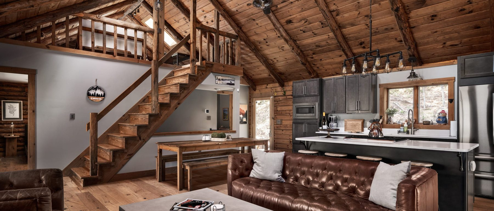
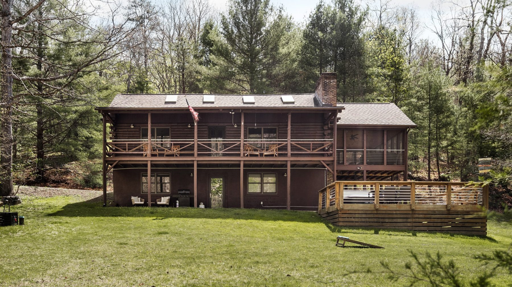
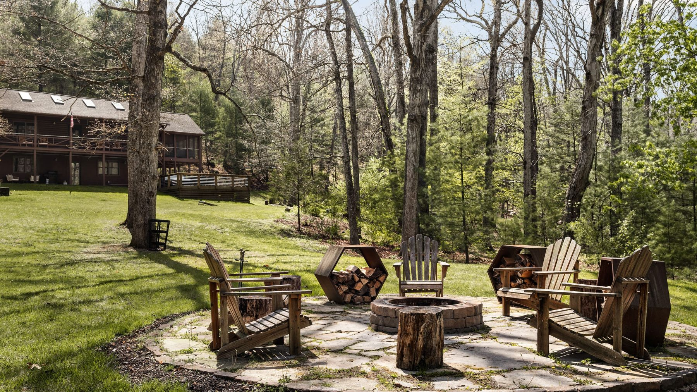
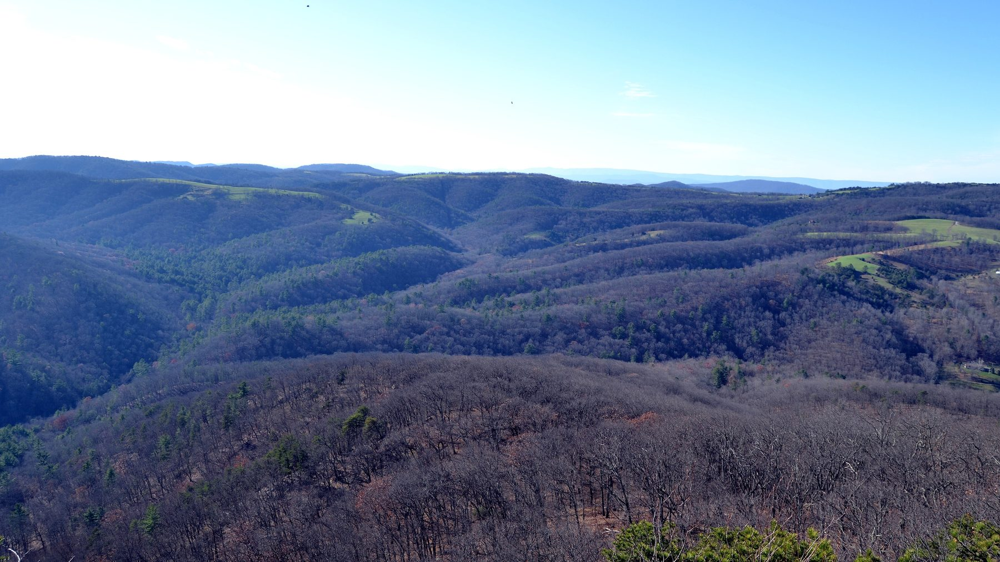
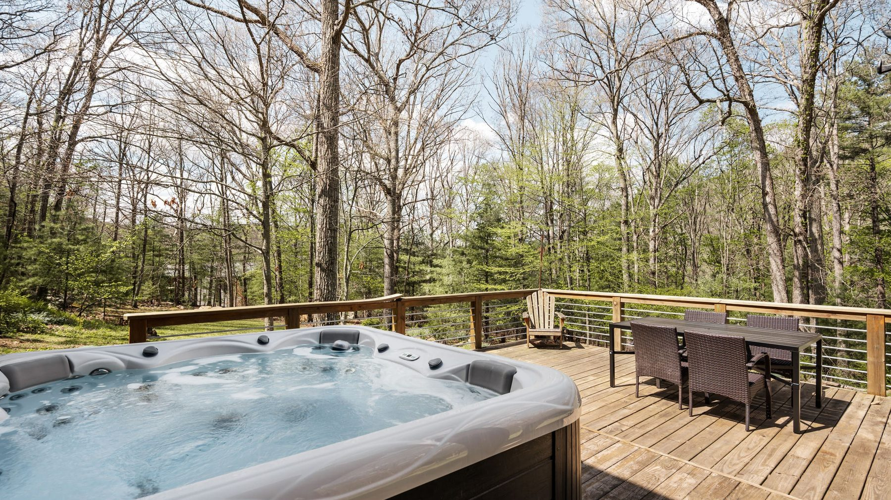
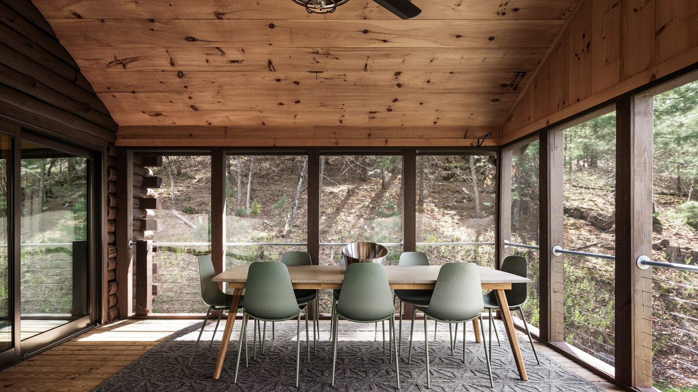
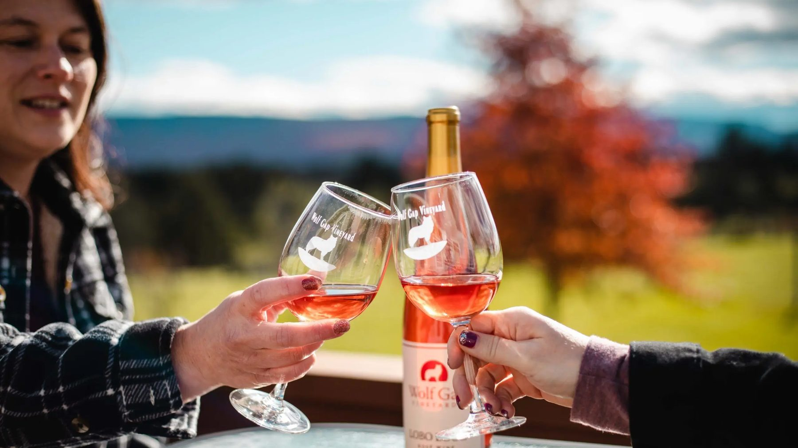
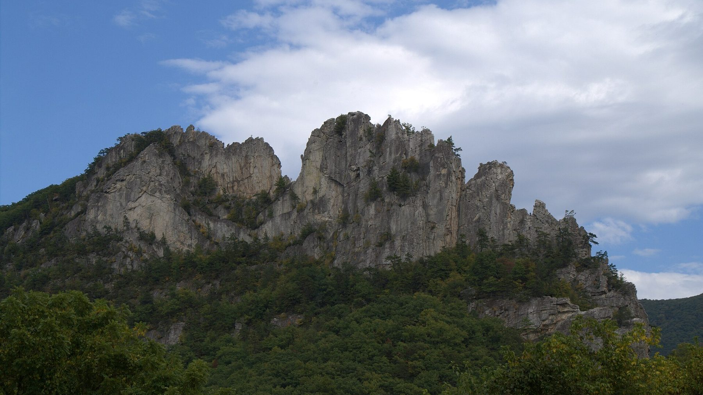
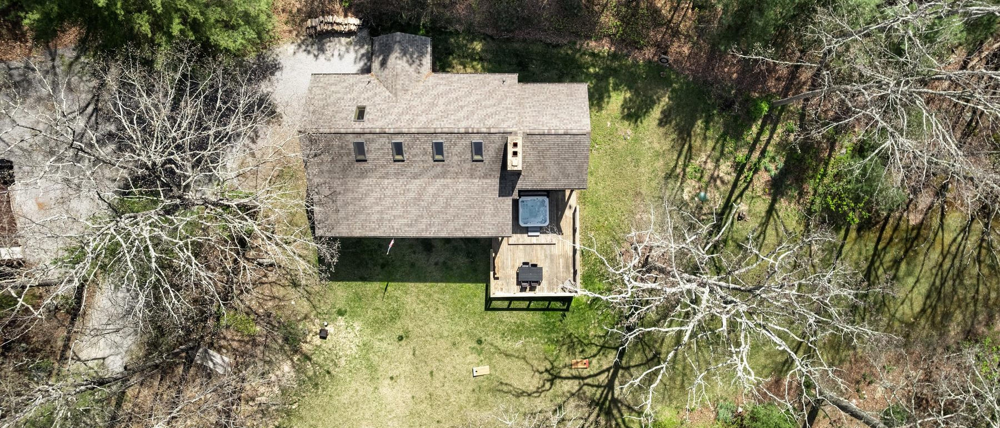

Birthday trip · Nov 15 to 18, 2026
Lost River Valley, WV
WhenSun Nov 15 to Wed Nov 18
Stay3 bed, 3.5 bath log cabin, sleeps 10

Birthday trip · Nov 15 to 18, 2026
Three nights in a private log cabin in the Lost River Valley of West Virginia, Sunday November 15 through Wednesday November 18. The itinerary is built around rest: unhurried mornings, one hike, two dinners out, good drinks, and the hot tub every evening.

| Cabin | The Retreat at Lost River Valley, 709 Wildlife Dr, Lost City, WV 26810. 3 bedrooms (king, queen, two doubles) plus a loft bed, 3.5 baths, each bedroom with its own bathroom and heated floors. Sleeps 10. Rated 5.0 on 59 reviews, Superhost. |
| Why this one | Private hot tub open year-round, fire pit with firewood included, screened porch, full kitchen, EV charger, pet-friendly. Fully private property. |
| Drive from Cleveland | About 5.5 to 6 hours, roughly 350 miles. Lost City is roughly 2.5 hours west of DC. |
| Weather to expect | Cold nights, mild afternoons, dry all four days. Lows around 30°F every night, highs climbing from the mid 40s Sunday to about 60 by Wednesday. Forecast below. |
| Cell service | Spotty in the valley. Please note, cellular service is limited for the last ~15 minutes of the drive into the cabin, so load directions and playlists before Moorefield. |
Highs and lows in °F, bar shows the day's range on a 25° to 65° scale. Dry all four days. Forecast as of Nov 13; check again the morning you leave.
| Category | Bring |
|---|---|
| Hike | Hiking boots or trail shoes with grip, a warm hat and light gloves for the 30°F start, a layer you can take off on the climb, sunglasses, a small backpack with water (1 liter each). |
| Nights outside | A real winter jacket for the fire pit and hot tub walk, a beanie, warm sweatshirt or fleece, sweatpants or joggers. It drops to freezing fast once the sun goes. |
| Hot tub | Swimsuit, flip-flops or slides for the deck, towel for hot tub. |
| Daytime and dinners | Jeans and a nice-ish shirt or sweater for Wolf Gap and Lost River Grill; neither is dressy. A light jacket for Tuesday and Wednesday afternoons. |
| Cabin | One bottle for the cabin bar, a party game or deck of cards, a Bluetooth speaker, phone charger, any medications, and a downloaded playlist and offline map since service drops before the cabin. |
Get there, get in the hot tub
Sunday is a travel day: the drive down, a grocery stop before the valley, and a quiet first evening at the cabin with tacos for dinner.

| Time | Plan |
|---|---|
| 9:00 am | Leave Cleveland. Road snacks, coffee, a shared playlist. |
| 2:30 pm | Grocery run in Moorefield (Walmart on US-220), the last real store before the valley. Sunday dinner, three breakfasts, cabin bar supplies, ice. Firewood is already covered. |
| 3:30 pm | Check in. Claim rooms: king, queen, the two doubles, or the loft. Jake's dog is coming. Please note, cellular service is limited for the last ~15 minutes of the drive into the cabin; have the address loaded before you lose signal. |
| 4:00 pm | Hot tub for whoever isn't cooking. |
| 6:30 pm | Night in. Sunday's cook makes dinner (see Food section for the menu), the rest set the table and pour. |
| 8:30 pm | Fire pit, bourbon, fun yapping. |
The overlook hike, then wine over the mountain
Monday is an early start for the hike to Cranny Crow Overlook, back at the cabin by noon, then an evening on the Virginia side of the mountain: a winery stop, dinner at Wolf Gap Vineyard, and a brewery afterward for anyone still going.

| Time | Plan |
|---|---|
| 8:00 am | Up. Quick breakfast at the cabin, coffee to go. |
| 9:00 am | Leave for Lost River State Park, 20 minutes south in Mathias. Park at the horse stables. |
| 9:20 am | Start up the White Oak Trail to Cranny Crow Overlook: 3.7 miles round trip, about 950 ft of climb. Full directions in the Trail section. |
| 10:35 am | Overlook. Rock ledge, 270-degree view across five counties, the Almost Heaven swing for the birthday photo. Morning light on the ridges and often fog in the valley below. It gets windy up top, so bring the jacket. |
| 12:00 pm | Back at the cabin. Shower, change, lunch from the groceries, hot tub if there's time. |
| 3:00 pm | Drive over Wolf Gap into Virginia, about 45 minutes to Mt. Jackson. First stop: Cave Ridge Vineyard, open Sunday to Thursday noon to 6 with a kitchen until 5. (Shenandoah Vineyards is closed Monday and Tuesday, so it is out.) |
| 4:30 pm | Dinner at Wolf Gap Vineyard, Edinburg, VA. Tasting room with mountain views, open daily noon to 6, food menu on site. |
| 6:30 pm | Optional last stop: Woodstock Brewhouse, 15 minutes south, for a beer and dessert if anyone wants one. Open Monday 11:30 am to 8 pm, kitchen 7 days. Otherwise straight back. |
| 8:00 pm | Cabin. Hot tub and the fire pit. |
| Option | From cabin | What it is |
|---|---|---|
| Eat in | 0 | A second cook takes the kitchen. Tacos, a big pasta, or steaks on the grill if the cabin has one. Cheapest option. |
| Lost River Grill | 5 min | Burgers, meatloaf, seafood specials, full bar. Mon 4 to 9. |
| Lost & Found Pizza, Mathias | 20 min | Wood-fired pizza right outside the state park, on the way back from the hike. Listed hours Mon to Sat 11 to 9, Sun 11 to 8; dog-friendly patio. |
| Downtown Harrisonburg, VA | 50 min | Local Chop & Grill House for steaks, Clementine for upscale casual (Local Chop is Mon to Sat 4:30 to 8:30, closed Sunday), Pale Fire or Brothers first. Needs a reservation and a designated driver. |
Easier hike: Howard Lick Trail in the same park is 1.25 miles and flat, following the creek. Still pretty, no climb.
Birthday dinner, stay in the valley
Tuesday stays close to the cabin: a relaxed day, dinner at Lost River Grill five minutes away, drinks in the lounge afterward, and the rest of the evening at the hot tub and fire pit.

| Time | Plan |
|---|---|
| Morning | Sleep in. Birthday breakfast at the cabin, mimosas on the porch. |
| 12:00 pm | Optional short outing from the activities list below. |
| 3:00 pm | Hot tub, cards, drinks at the cabin. |
| 6:30 pm | Birthday dinner at the Lost River Grill, 8079 WV-259, 5 minutes from the cabin. Hand-cut steaks, seafood special, cream pies for dessert. Open Tuesday noon to 9. |
| 8:30 pm | After-dinner drinks in Lost River Grill's lounge (TK's: fireplace, sofa, martinis) until it closes at 9, then back to the cabin. |
| 10:00 pm | Back to the cabin. Hot tub, fire pit, drinks. |
If we want a bigger night: downtown Harrisonburg, VA is 50 minutes south with breweries (Pale Fire, Brothers) and a real dinner scene (Local Chop & Grill House, Clementine). Axe throwing at Beards & Broads in Broadway, VA is on the way. A designated driver is needed for the drive back.
Checkout and the drive home
Wednesday is a quick morning: clean the cabin, pack the cars, and leave by 9, arriving in Cleveland by mid-afternoon.

| Time | Plan |
|---|---|
| 7:30 am | Up. Pack, clean the house: dishes done, trash out, hot tub cover on, beds stripped if the host asks. |
| 9:00 am | Leave. Lost City to Cleveland is about 5.5 to 6 hours, home by mid-afternoon. |
Sunday dinner is tacos at the cabin, Monday is dinner at Wolf Gap Vineyard, Tuesday is the birthday dinner at Lost River Grill, and every breakfast is at the cabin. The grocery list should be divided ahead of time so nothing is duplicated or forgotten.

| Meal | Plan |
|---|---|
| Sunday dinner | White people tacos at the cabin: ground beef, seasoning packet, hard and soft shells, shredded cheddar, lettuce, tomato, sour cream, salsa. Request extra toppings on the grocery form under The basics. |
| Breakfasts | Eggs, bacon, bagels, fruit, coffee. |
| Cabin bar | Everyone brings one bottle and owns one cocktail. Pick up a local bottle on the way: Elkhorn Mountain Distillery moonshine from Moorefield shows up on menus all over the valley. Mixers, ice, and limes go on the grocery list. |
| Fire pit | Bourbon and fun yapping. |
The valley has one bar open midweek; the breweries and tasting rooms across the mountain in Virginia are the options for a longer outing.
| Bar | What it is | Open on our dates | From cabin |
|---|---|---|---|
| Lost River Grill lounge, 8079 WV-259, Lost City | TK's lounge: full bar, martinis, a sofa in front of the fireplace. Not a gay bar, but the DC crowd fills it on weekends and the owners name LGBT travelers on their site. | Mon 4 to 9, Tue 12 to 9, Wed 4 to 9 | 5 min |
| Swover Creek Farms & Brewery, Edinburg, VA | Farm brewery with a kitchen, disc golf, and a dog park. | Closed Mon to Wed. Thu 4 to 8, Fri and Sat 12 to 8, Sun 12 to 7 | 45 min |
| Woodstock Brewhouse, 123 E Court St, Woodstock, VA | Downtown brewery with a full gastropub menu; also pours Muse and Cave Ridge wine. | Mon 11:30 to 8, Tue and Wed 4 to 8, Thu 4 to 10, Fri and Sat 11:30 to 10, Sun 11:30 to 8 | 50 min |
| Wolf Gap Vineyard, Edinburg, VA | First tasting room over the mountain, mountain views, closest wine to the cabin. | Daily noon to 6; winter hours may differ, call | 40 min |
| Muse Vineyards, Woodstock, VA | Polished estate winery, often live music on weekends. | Closed Mon to Thu. Fri to Sun noon to 6 | 50 min |
| Pale Fire Brewing and Brothers Craft Brewing, Harrisonburg, VA | Two downtown taprooms a few blocks apart; Pale Fire's kitchen opens at 4. Pair with a Harrisonburg dinner. | Pale Fire Mon and Tue noon to 10, Wed and Thu noon to 11, Fri and Sat noon to midnight | 50 min |
| West-Whitehill Winery and Elkhorn Mountain Distillery, Moorefield, WV | Small family winery and the local moonshine maker a few minutes apart, on the same road as the grocery store. | Call ahead | 35 min |
None of the following is scheduled; it is a menu for free time. Everything is within an hour of the cabin. The Virginia side, over Wolf Gap into Edinburg and Woodstock, has the wineries and breweries; the West Virginia side has the hikes. Midweek hours in November are limited everywhere, so confirm by phone before driving.

| Place | Where | From cabin | Notes |
|---|---|---|---|
| Swover Creek Farms & Brewery | Edinburg, VA | 45 min | Farm brewery with a scratch kitchen, disc golf, and a dog park. Closed Monday to Wednesday, so it only works on a future trip. |
| Wolf Gap Vineyard | Edinburg, VA | 40 min | First winery over the mountain from the cabin, mountain views from the tasting room. |
| Muse Vineyards | Woodstock, VA | 50 min | The polished one: estate wines, often live music. Closed Monday to Thursday, so not on our dates. |
| Woodstock Brewhouse | Woodstock, VA | 50 min | Brewery plus full gastropub menu downtown, pours Muse and Cave Ridge wine too. Good lunch stop. |
| Cave Ridge Vineyard | Mt. Jackson, VA | 45 min | Estate winery with a kitchen. Sun to Thu noon to 6, Fri and Sat to 7. The one winery besides Wolf Gap that is open Monday. |
| Shenandoah Vineyards | Edinburg, VA | 45 min | Virginia's oldest winery in the valley. Wed to Sun 11 to 5, closed Mon and Tue, so only possible Sunday on the drive in. |
| West-Whitehill Winery | Moorefield, WV | 35 min | Small family winery on US-220. Modest, close, pairs with the grocery run. |
| Elkhorn Mountain Distillery | Moorefield, WV | 35 min | The local moonshine on every valley menu. Hours vary, call (they are a few minutes from West-Whitehill). |
| Activity | From cabin | Notes |
|---|---|---|
| Big Schloss, Wolf Gap Recreation Area | 30 min | 4.4 miles out and back, rock-fin summit with the best view in the area, on the way to the Virginia wineries. |
| Trout Pond Recreation Area | 20 min | WV's only natural lake, flat loop walk, picnic tables. Low-effort. |
| Seneca Rocks | 75 min | 1.5-mile switchback trail to the platform on the rock fin, the signature WV photo. |
| Dolly Sods Wilderness | 90 min | High-plateau tundra. Only if roads are clear; it closes with snow. |
| Horseback riding, Lost River State Park | 20 min | Guided rides from the stables; the season usually ends in October, so call the park at (304) 897-5372 before counting on it. |
| Smoke Hole Caverns | 60 min | Guided cave tour, 56 degrees year-round, a rainy-day option on the way to Seneca Rocks. |
| Mountain biking, Lost River State Park | 20 min | Several trails allow bikes. Bring your own. |
| Place | From cabin | Notes |
|---|---|---|
| Lost River Trading Post & Grasshopper Gallery, Wardensville | 25 min | Antiques, local art, cabin goods, scratch-baked lunch. Open daily 9 to 5. |
| Lost River Artisans Cooperative, Lost River | 10 min | Local craft co-op on WV-259. Weekend-only most of the year; assume closed midweek unless a call says otherwise. |
| Wardensville Garden Market | 25 min | Farm market, bakery, and cafe run as a youth job program. Good coffee stop. Check winter hours. |
| Downtown Woodstock, VA | 50 min | Court Street shops and the Brewhouse, pair with the wineries. |
| Lost River State Park overlooks by car | 20 min | Drive to the picnic areas and the historic Lee Cabin without hiking. |
| Idea | Notes |
|---|---|
| Hot tub and screened porch | The default. Everything else is optional. |
| Lost River Yoga Barn | The red barn on WV-259 near the General Store; check for a class. |
| Game night | Bring cards, a couple of party games, and a speaker. |
| Cocktail competition | Everyone makes their signature drink, blind taste test. |
| Bingo or trivia | Bring a speaker and a playlist. Someone writes the questions on the drive down. |
One trail up, the same trail down. 3.7 miles round trip, about 950 feet of climb, 2 to 2.5 hours at a group pace. Orange blazes the whole way up, then a short yellow spur to the overlook.
| Park here | Horse stables lot, Dove Hollow Road, Lost River State Park. From the cabin take WV-259 south to Mathias, turn right onto Howards Lick Road (CR 12) at the park sign, then follow signs for the stables. About 20 minutes. Park address for GPS: 321 Park Dr, Mathias, WV 26812. |
| Trail map | Official park map (PDF). Download it before you leave the cabin; there is no signal on the ridge. The park office at the entrance also has paper copies. |
| Blazes | Orange = White Oak Trail (the climb). Yellow = Millers Rock Trail (the last few hundred yards to the overlook). If you see blue, you are on Howard Lick and have gone the wrong way. |
| Footing | Dirt horse trail, rocky in places, with switchbacks. Expect horse droppings. Leaves are down in November, so the trail is obvious but can be slick after rain. Boots, not sneakers. |
| Step | What to do |
|---|---|
| 0.0 mi | From the stables lot, find the orange-blazed White Oak Trail sign at the edge of the riding area and start up. It climbs from the first step. |
| 0.3 mi | Pass a small shelter with a partial view. Keep climbing on orange. |
| 0.3 to 1.5 mi | A series of switchbacks up the side of Big Ridge. This is most of the 950 feet. Take it slow; the grade eases near the top. |
| 1.5 mi | Junction on the ridge with the yellow-blazed Millers Rock Trail. Bear right onto yellow. |
| 1.7 mi | Cranny Crow Overlook, about 3,200 feet. A stone overlook on a rock ledge facing south and west across the valley, five counties on a clear day, and the Almost Heaven swing for the photo. No railing on the rocks beyond the overlook, so stay on the built part. |
| Back | Retrace: yellow back to the junction, bear left onto orange, and follow the switchbacks down to the stables. Do not take any trail that drops off the ridge to the right; that is the long loop toward Howard Lick. |
If anyone wants the flat option: Howard Lick Trail, blue blazes, 1.25 miles along the creek from the lot near Cabin 3. Meet back at the stables.
Driving times from the cabin are below. Cell service in the valley is unreliable, so save this page before arriving.

| Place | From the cabin |
|---|---|
| Lost River Grill | 5 min |
| Lost River State Park trailhead | 20 min |
| Trout Pond Recreation Area | 20 min |
| Wardensville (Trading Post, Kac-Ka-Pon) | 25 min |
| Moorefield (gas, Walmart, Elkhorn distillery) | 35 min |
| Wolf Gap Vineyard, Edinburg, VA | 40 min |
| Harrisonburg, VA (dinner, breweries) | 50 min |
| Seneca Rocks | 75 min |
| Cleveland | 5.5 to 6 hr |